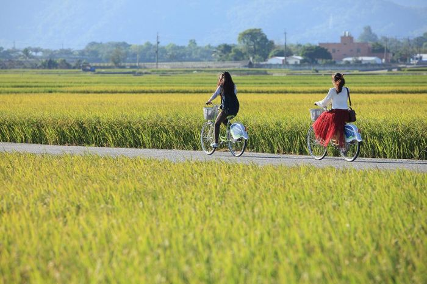

台灣好風景
聯絡我
到處走走
來池上就是要騎著腳踏車繞鄉間小路唷~
大坡池為一內陸淡水草澤地，由於天然環境良好，因此動、植物等生態資源十分豐富，各種水生植物與鳥類、蛙類及淡水魚蝦等物種繁多。在臺東縣政府的規劃與整治下，目前大坡池水域面積約有20公頃，週邊護岸及濕地也有20公頃左右，設有環湖步道與自行車道，是進行植物觀察、賞鳥、垂釣、健行、騎自行車等休閒活動的理想場所。
臺東縣池上鄉的一條田園小路，因拍攝了伯朗咖啡的廣告而廣受歡迎，被譽為是一條「翠綠的天堂路」。廣大翠綠的稻田，路旁沒有一支電線桿，真真實實感受到一望無際，不僅有著拍照的好景色，更能帶著心靈遠離喧囂擾嚷，親身體驗一次放鬆的純粹。 而伯朗大道上的一顆茄苳樹，因拍攝金城武奉茶片段而被稱為「金城武樹」吸引許多追星族及遊客前往。因伯朗大道平時為產業道路，供農民們務農時使用，前往造訪時請不要任意踐踏農田及擋住務農車輛。

池上火車站附近有很多租腳踏車的店，單車、雙人車、家庭車...等，應有盡有，有的腳踏車店還提供寄放行李的服務。可以向店家問腳踏車的路線，原則上是繞一大圈，就會騎回到火車站了，不一定要擠在伯朗大道，沿途的風景和空氣都很美唷，池上的居民真的很用心在維護他們家鄉的美麗。